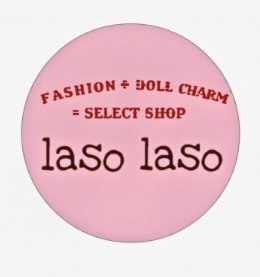
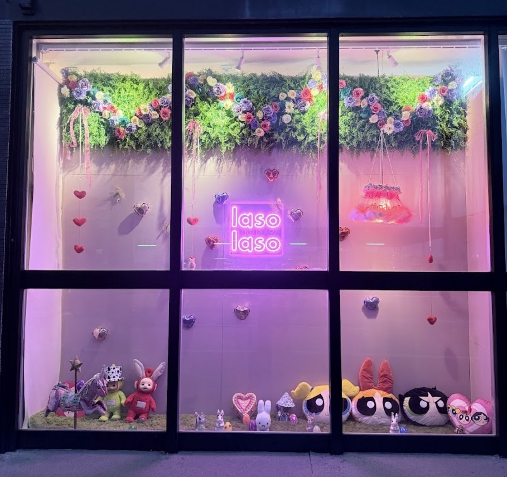
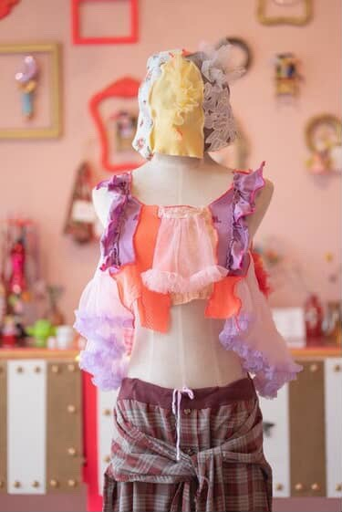
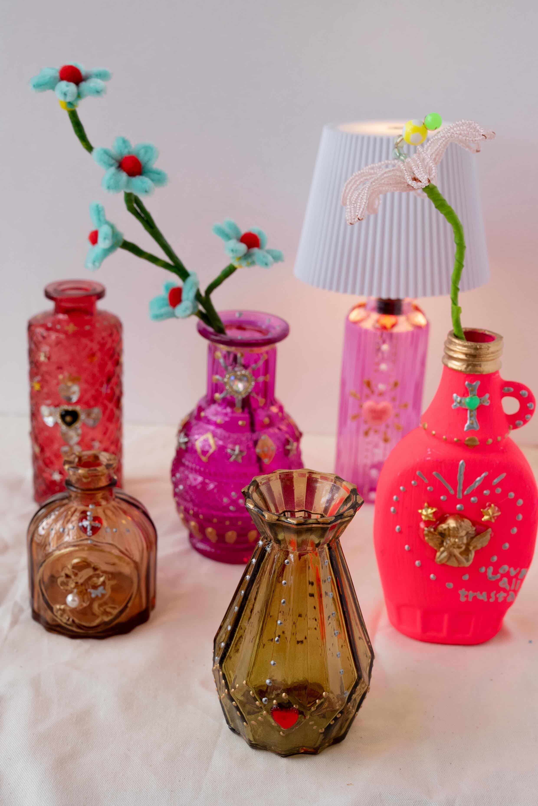
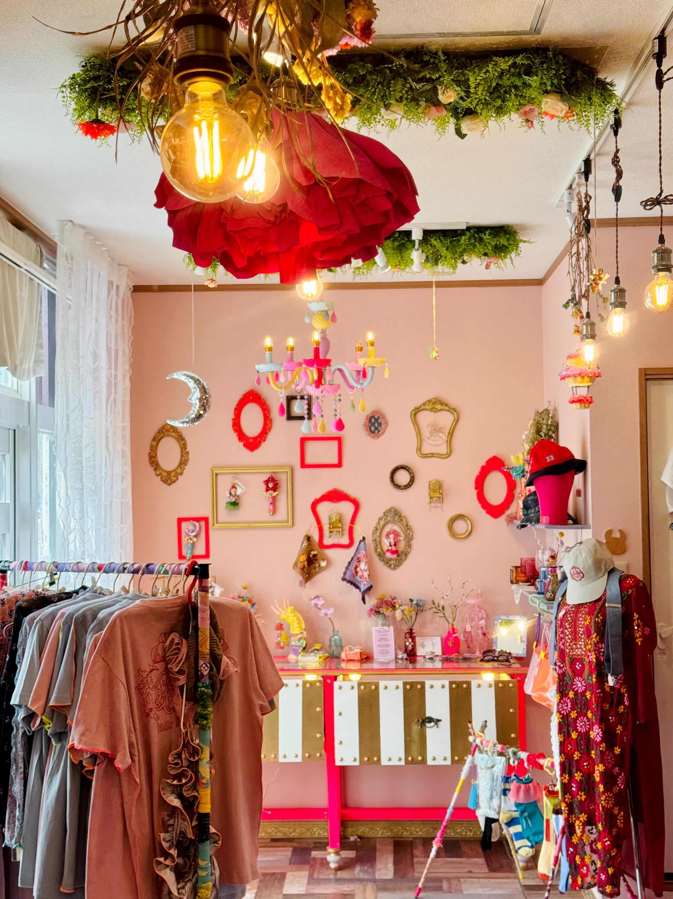
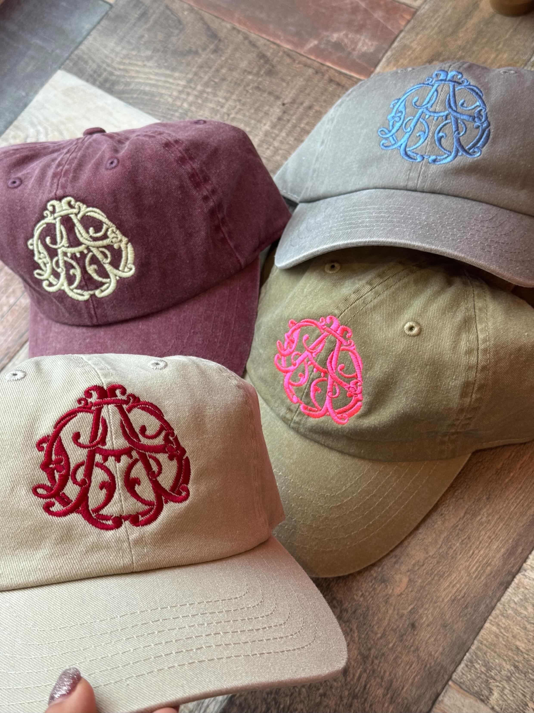

Laso Lasoラソラソ
ラソラソ
Located in Miyakojima, Laso Laso is a colorful select shop filled with handmade creations, vintage clothing, and carefully selected goods gathered from Japan and abroad. Originally starting as a handmade creator, the owner spent years creating doll charms and remade fashion pieces before opening the shop in April 2025. Today, the space reflects that same playful creativity — offering one-of-a-kind items, unique finds, and a warm atmosphere that feels personal to the island.
ラソラソは、ハンドメイド作品や古着、 国内外からセレクトした雑貨が並ぶ、 宮古島のカラフルなセレクトショップです。 オーナーはハンドメイド作家として活動を続け、 ドールチャームやリメイクアイテムの制作を経て、 2025年4月にお店をオープンしました。 現在は、一点もののアイテムや個性的な雑貨、 遊び心のある空間を通して、 宮古島らしいあたたかい雰囲気を届けています。
Why My Miyakojima Recommends ItMy Miyakojimaがおすすめする理由
Selected for its playful eye, handmade character, and the way the shop feels personal, colorful, and rooted in Miyakojima.
遊び心のあるセレクト、ハンドメイドの個性、そして宮古島に根ざしたカラフルで温かい空気感を大切に紹介しています。
More than just a boutique, laso laso feels like a small creative space where fashion, handmade culture, and everyday island life naturally mix together. The shop carries vintage clothing, accessories, imported goods, and original handmade items — many chosen with the idea of offering pieces that can only be found here in Miyakojima. Located near local schools and neighborhood streets, it has quietly become a place where both locals and visitors stop by to discover something unexpected.
ラソラソは、ただのセレクトショップではなく、 ファッションやハンドメイド文化、 宮古島の日常が自然に重なる小さなクリエイティブ空間です。 古着やアクセサリー、海外・国内から仕入れた雑貨、 オリジナルのハンドメイド作品など、 宮古島ではここにしかない一点ものを大切にセレクトしています。 地域の暮らしに近い場所にあり、 地元の方や観光で訪れた方が、 ふらっと立ち寄って新しい出会いを楽しめるお店です。
Photos 写真






Location 場所
Address
803-3 Hirara Nishizato K8Z101, Miyakojima, Okinawa
〒906-0012
沖縄県宮古島市平良西里803-3 K8Z101
宮古島の事業者さまへFor Miyakojima Businesses
お店やサービスを、英語と日本語で丁寧に紹介しませんか？
My Miyakojimaでは、宮古島の事業者さま向けに、雰囲気やストーリーまで伝わる紹介ページを制作しています。観光で訪れる方にも、島に住む方にも届くように、英語と日本語の両方で掲載できます。
My Miyakojima creates curated bilingual feature pages for selected local businesses, helping visitors understand your story before they contact you.
掲載・制作の相談をするContact My Miyakojima